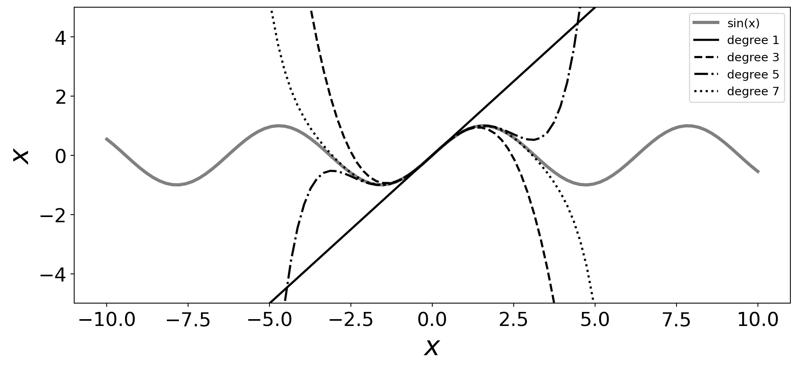

Code
import math
import numpy as np
import matplotlib.pyplot as plt
degrees = (1, 3, 5, 7)
ls = ('-', '--', '-.', ':')
def taylor_e(x, a, n) :
"""
x* = a 에서 전개
f(x) = f(a) + f'(a)*(x-a) + (1/2!)f''(a)(x-a)^2 + ... + (1/k!)f^(k)(a)(x-a)^k + R_k
"""
signs = (1, -1, -1, 1)
derivs = (np.cos, np.sin, np.cos, np.sin)
fx = np.sin(a)
for i in range(1, n+1) :
fx += (signs[(i%4)-1]*derivs[(i%4)-1](a)) / math.factorial(i)*(x-a)**i
return fx
x = np.linspace(-10, 10, 100)
y = np.sin(x)
fig = plt.figure(figsize=(12,5))
ax = fig.add_subplot(1, 1, 1)
ax.xaxis.set_tick_params(labelsize=18)
ax.yaxis.set_tick_params(labelsize=18)
ax.set_xlabel(r'$x$', fontsize=25)
ax.set_ylabel(r'$x$', fontsize=25)
ax.grid(False)
taylors = (taylor_e(x, 0, i) for i in degrees)
ax.plot(x, y , lw=3, color='gray',
label=r"sin(x)")
for i, taylor in enumerate(taylors) :
ax.plot(x, taylor, lw=2, ls=ls[i], color='k',
label="degree {}".format(degrees[i]))
ax.legend(fontsize=11)
ax.set_ylim([-5, 5])
# plt.suptitle("Taylor series, order=1,2,3", fontsize=15)
plt.show()